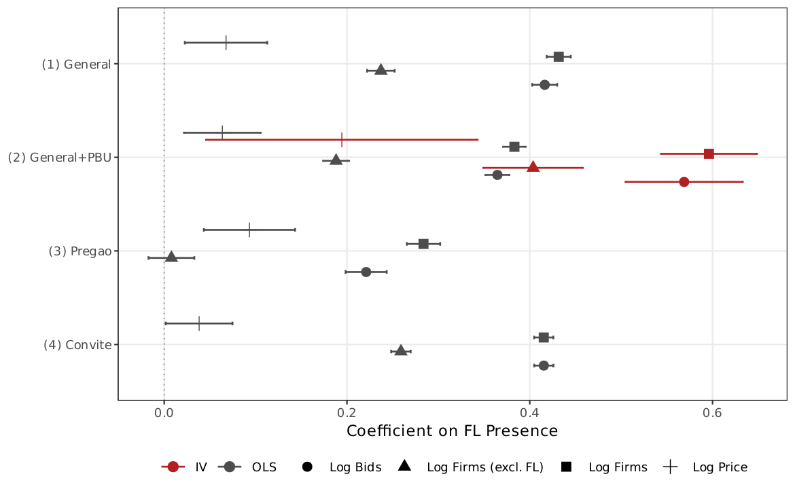
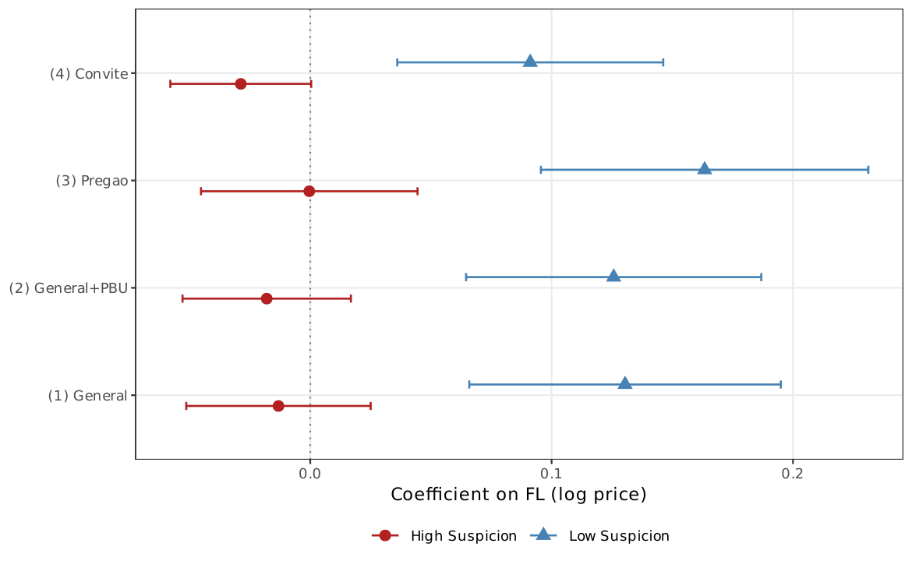
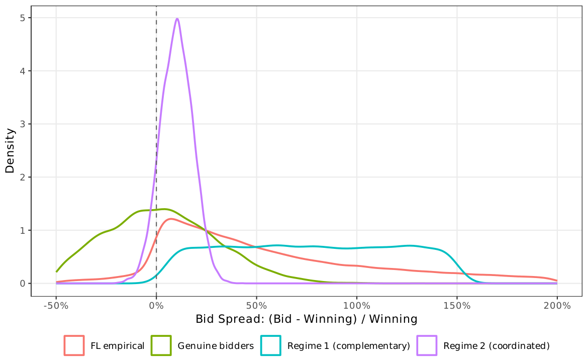

Main Results¶
This page presents the core empirical findings: classification diagnostics, price association, detection performance, network-split heterogeneity, Bajari--Ye tests, structural estimation, and supporting mechanism evidence.
Classification Diagnostics¶
Before the price regressions, three checks verify that the binary FL classification captures a real behavioral pattern.
| Check | Result | Interpretation |
|---|---|---|
| Zero-win bright line | Relaxing to 1% or 2% attenuates coefficient substantially | The zero-win condition does real work |
| Continuous measure | 0.022 per log-point (SE = 0.005); implied value at threshold \(\approx\) 5.8% | Binary OLS of 6.4% reflects continuous relationship evaluated at threshold |
| Permutation placebo | Mean 0.001, SD 0.003 over 20 replications; none reaches 0.064 | Association reflects specific FL allocation, not chance |
OLS and Matching Results¶
FL presence is associated with significantly higher negotiated prices across all specifications.
| Specification | Coefficient | SE | Effect (%) | \(N\) |
|---|---|---|---|---|
| (1) Item + Year FE | 0.068* | (0.022) | +6.8% | 1,654,401 |
| (2) Item + Year + PBU FE | 0.064* | (0.020) | +6.4% | 1,654,401 |
| (3) Pregao only (all FE) | 0.089* | (0.025) | +9.3% | 1,334,729 |
| (4) Convite only (all FE) | 0.037 | (0.022) | +3.8% | 319,718 |
Price range: 3.6--7.7%
Four estimation approaches produce a consistent range: cross-fit (3.6%), IPW (5.5%), OLS (6.4%), CEM (7.7%). The estimates cluster rather than scatter, indicating a stable conditional association across designs.
Matching and Cross-Fit¶
| Estimator | Coefficient | SE | \(N\) |
|---|---|---|---|
| Cross-fit | 0.036 | (0.019) | 1,654,401 |
| IPW | 0.055 | (0.021) | 830,194 |
| OLS (all FE) | 0.064 | (0.020) | 1,654,401 |
| CEM | 0.077 | (0.024) | 969,751 |
The cross-fit defines FL using odd years and estimates on even years (and vice versa), breaking any mechanical link between classification and outcomes. The attenuation from 0.064 to 0.036 reflects classification noise from the smaller subsample (1,885--2,153 vs. 2,735 FL firms), not mechanical bias---a decomposition exercise yields 0.043 (SE = 0.019).
Non-FL (Genuine) Firms¶
FL-present tenders have +0.19 more non-FL firms (PBU FE specification, \(p < 0.01\)), contradicting crowding-out and consistent with FL selection into competitive markets.
{kind=link}

Detection Performance¶
This is the paper's primary validation exercise.
ROC Analysis¶
| Metric | Value |
|---|---|
| AUC (FL screen) | 0.94 (95% CI: 0.91--0.94) |
| AUC (Imhof-style CV proxy) | 0.79 |
| DeLong \(p\)-value | \(< 0.001\) |
| Youden \(J\) | 0.84 at 1.45x IQR |
| TPR at optimal threshold | 1.00 |
| FPR at optimal threshold | 0.16 |
AUC = 0.94 against CADE convictions
The data-driven optimal threshold (Youden \(J = 0.84\)) falls at 1.45x IQR---nearly identical to the 1.5x rule chosen a priori on economic grounds. The convergence is striking: the participation intensity at which profit-maximizing entry becomes hard to rationalize is also the intensity that best discriminates cartel-linked environments.
Horse-Race Regression¶
The FL screen and an Imhof-style CV flag capture nearly orthogonal information (correlation 0.06). When both are included as regressors:
- FL coefficient rises from 0.064 to 0.084 (\(p < 0.01\))---a suppression effect predicted by the framework (coordinated cover bidding produces low dispersion while maintaining FL participation)
- Imhof CV flag enters at 0.021 (\(p < 0.01\))
CADE External Validation¶
| Metric | Value |
|---|---|
| FL firms co-participating with CADE convicts | 193 / 2,735 (7.1%) |
| Expected rate (permutation, 1,000 draws) | 2.0% |
| Ratio | 3.5x |
| Permutation \(p\)-value | \(< 0.001\) |
| CADE-convicted firms classified as FL | 3 |
FL detects beyond known cartels
Excluding all CADE-involved markets, the FL coefficient is 0.062 (vs. 0.064 baseline)---virtually identical. The FL screen captures price anomalies beyond the cases already prosecuted by CADE.
Network-Split Heterogeneity¶
FL firms are classified into concentrated-market (high winner HHI) and competitive-market (low winner HHI) subgroups based on co-bidding networks.
| Group | \(N\) FL firms | Coefficient | SE | Effect (%) |
|---|---|---|---|---|
| All FL | 2,735 | 0.064* | (0.020) | +6.4% |
| Concentrated-market FL | 1,356 | \(-0.018\) | (0.024) | \(-1.8\)% |
| Competitive-market FL | 1,379 | 0.126* | (0.031) | +13.4% |
Price association concentrates in competitive markets
Nearly all of the association comes from competitive-market FL firms. In concentrated markets, where dominant firms already sustain high prices through market power, the coefficient is indistinguishable from zero. Cover bidders are redundant where market power already exists---and most valuable where genuine competitive threat exists. For enforcement, the screen is most informative precisely in the markets where undetected collusion would be costliest.
{kind=link}

Bajari--Ye Tests¶
Exchangeability¶
KS test rejects the null that FL and non-FL bid residuals share the same distribution: \(D = 0.15\) (\(p < 0.001\)). FL bids appear to be drawn from a different process.
Conditional Independence¶
Mean pairwise product of FL residuals: 4.28 (\(t = 81.0\), \(p < 0.001\)), with the bootstrap FL--non-FL difference excluding zero. Enriching the first stage with firm age and CNAE sector dummies leaves \(R^2\) virtually unchanged (0.770) and does not alter the results.
Tender FE Reversal¶
Under tender FE, both products drop substantially:
| Group | Without tender FE | With tender FE |
|---|---|---|
| FL pairwise product | 5.16 | 0.38 |
| Non-FL pairwise product | 2.21 | 0.86 |
The FL product falls below non-FL---a reversal predicted by Regime 2. Under the coordinated regime, cover bids cluster near \(b^* + \epsilon\); removing the tender mean strips out the shared focal-point component.
Structural Diagnostic¶
BIC strongly favors Regime 2 (\(\Delta\)BIC \(= -91{,}473\)).
| Parameter | Estimate |
|---|---|
| \(\hat{\sigma}_c / \hat{\sigma}_g\) | 0.72 |
| Interpretation | FL bids are 28% less dispersed than non-FL bids |
| \(n\)-conditional markup | 6.4% (close to OLS baseline) |

{kind=link}

Supporting Diagnostics (M1--M5)¶
| Diagnostic | Test | Result | Interpretation |
|---|---|---|---|
| M1: Competitive displacement | Non-FL firm count | +0.19 more non-FL firms (\(p < 0.01\)) | FL adds to, not displaces, genuine bidders |
| M2: Reference price anchoring | Winning-bid-to-ref-price ratio | \(-\)4.1% closer to reference (\(p < 0.01\)) | Consistent with coordination anchor |
| M3: Reverse causality | Lagged price on FL entry | Elasticity \(= 0.002\) (SE \(= 0.0008\)) | Two orders of magnitude too small to explain 6.4% |
| M4: Dyadic linkage | Stratified permutation | 4,696 high-frequency pairs vs. 3,271 expected (\(p < 0.001\)) | Excess persistent FL--winner pairs |
| M5: Firm exit | Cox model | HR \(= 0.60\) (\(p < 0.01\)) | FL-exposed firms survive longer (opposite of crowding-out) |
Bid Rotation and Bid Inflation¶
- FL firms' winner HHI: 0.178 (14.3 unique winners) vs. non-FL always-losers: 0.303 (5.0 winners; \(p < 0.001\)). FL firms co-participate with a wider range of winners.
- Among 38,941 FL--winner pairs, 4,696 share \(\geq 5\) tenders and 379 share \(\geq 20\) (max: 177).
- FL median bid-to-winner ratio: 1.85 (85% above winner) vs. 1.43 for non-FL losers. Controlling for item and year FE, FL bids are 15.4% higher (\(p < 0.001\)).
Joint Assessment¶
Each diagnostic, taken alone, admits other readings. Taken together---entry without displacement, reference-price anchoring, small reverse-causality elasticity, excess dyadic linkage, and lower exit hazard in FL-exposed markets---the pattern is hard to square with a simple competitive account and consistent with coordinated cover bidding. The diagnostics do not prove the mechanism; they strengthen the case that the screen is worth deploying.